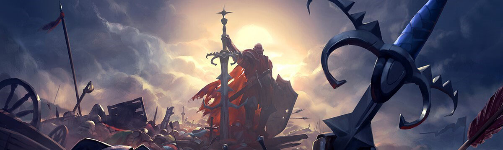
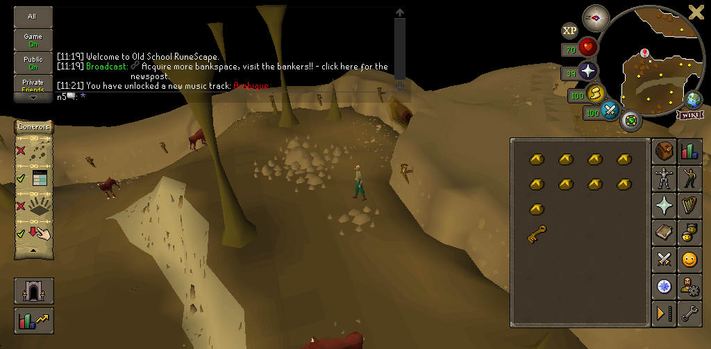

Old School Runescape User Experience writeup
Intro.
Just to start, let me introduce myself.
I am Odinn, A Graphics Gesigner for 10+ years from the Netherlands specializing in UI/UX since 2018.
One of my hobbies is playing and getting endulged with OSRS and its lore.
As a Graphic Designer who has a passion for this game, after reading runescapes Blog post about ui overhaul, I created a proposal redesigning the games mobile UI.
I would like to preface this article by saying that this is a very subjective and rudimentary overview, conventionally there are more aspects, research, and processes involved in UX to make this an accurate analysis.
Anyways, Enjoy!
analysis.
Before i suggest possible solutions and/or fixes to the proposed and current ui, we should take a moment to analyse the function of the mobile UI that is in place today.
The two examples shown here are the current UI for mobile, one minimized and the other expanded.
note that the Inventory Panel will switch sides to which 'stone' is selected.
The mobile application does an excellent job creating a seamless experience with the desktop version while keeping the Old school feel by integrating a UI that displays a vertical layout of stones, a dynamic inventory panel, and the chat.
Jagex presented these functions in a respectable manner, but is this the correct way to do that? That's what I hope to answer in this writeup.
Heatmap.
With the presented heatmap i would like to illustrate the importance of elements, and to show where the focus is requested during regular gameplay.
The most important elements arguably are the inventory, prayer and the spellbook panel. these panels are core to succesfull gameplay and require frequent focus from the player; during battle (to heal, pray and gear switch), during bankstanding to hig-alc and craft, and last but not least, to travel and explore throughout the game. if any of these three panels are omitted the game could not function properly.
Looking at the hotspots your focus is spread out throughout the entire screen, from left to right and through the middle.
The better part of this layout is that both sides of the screen are used so a player can use both hands to perform actions. Sadly, this is hindered by the need to switch panels, requiring the player to refocus sporadically on specific elements, which are amplified with the size of some spells, items and status orbs.
The players eye travels quite the distance during gameplay and with that one could lose focus on the objective at hand.
Heatmap v2.

 With the proposed UI, the focus shifts and shrinks, to the right and center.
this allows for new UI elements, extended control settings, a dedicated logout button, and a section for a 'Power User Panel'.
The Chat box changes to a more vertical control scheme, shrinking the F pattern covering the chat and the rest of the left side.
These changes alleviates the eye focus and travel, to allow faster focus on more important things.
However! Now with the relieved space, the new toutch controls and the dedicated logout button unnessarily clutter up the won real-estate.
The chat controls, are a step in the right direction, they obfuscate the previous eassily accessible buttons (some more usefull than others).
With the proposed UI, the focus shifts and shrinks, to the right and center.
this allows for new UI elements, extended control settings, a dedicated logout button, and a section for a 'Power User Panel'.
The Chat box changes to a more vertical control scheme, shrinking the F pattern covering the chat and the rest of the left side.
These changes alleviates the eye focus and travel, to allow faster focus on more important things.
However! Now with the relieved space, the new toutch controls and the dedicated logout button unnessarily clutter up the won real-estate.
The chat controls, are a step in the right direction, they obfuscate the previous eassily accessible buttons (some more usefull than others).
Suggestions.
So with the analysis taken in concideration. let's take a look at some suggestions and build it up from a clean slate.
Hiding all the UI elements shows how much real-estate we have to work with. The player now can purely focus on the character and their enviroment.
However, as discussed before we need a few elements to have a functioning game, the inventory, the data orbs and the panel stones.
The first element I would like to add are the Stones and the data orbs!
The suggested ones sorts them in a neater and more intuitive manner than the current minimised version.
The stones I decided to use are the ones form the suggested UI. The order of the stones make the distinction between the primary (inventory, prayer, magic, attack styles)
and the secondary stones (Exp, emotes, friends/clan list, acc settings, more) allowing the user to collapse the stones to just the primary.
There's a lot of good about the new ui, however lets nuke the dedicated logout button and controls, and come back to it later, but instead bring just the powerpanel button back. I would also like to concolidate all chat buttons to a single one.
One of the stronger elements in the new UI is the existence of the Power Panel, this deserves to stay, but should be used for more than just information.
Like in Minecraft, I suggest the chat would pop up and fade away with a max of four lines.
Now obviously sometimes you want to read back to what is said or what happened in game. we can expand it by clicking on the button in the top left like with the powerpanel). This will show an extended chat box with tabs and allows you to chat with the players around you.
In the first image you see the minimised Power pannel, in the case of EXP, it would only show the specefied tracker, be it total EXP or any of the specific skills.
This is to limit the clutter on the screen but can be expanded to show the other capabilities of the powerpanel.
the first image also shows us the fading chat bar now with only the last message visible.
The second image shows us the expanded chat bar with all the tab buttons, archive and allows the player to chat. It also allows us to set a filter or limit the chat to one specific category of messages.
The Power Panel provides us with a new way to interact with the game through information and the likes, We can however use it for more than just that, in this case i moved the toutch controls from the suggested UI to the powerpanel and gave it a horizontal layout, same functionality applies to as before.
The power panel could also provide us with an area where we could move specific settings and controls, like the game settings and the world switcher & logout button.
I suggest the following for the world switcher,
a minimised bar with a direct logout button and 2 of your favorite worlds for a quick hop.
For the extended version we could bring in the full filterable world list for easier navigation through the different worlds.
We can populate the power panel with information about slayer, your home build options, it could provide statistics about the latest loot you collected, or information about your party, it can be used for so much more than just raw information.
For each Power panel we would have a minimised version for ease of use and a maximised version for more nuanced control and information.
Vertical UI
One of the request by the developers was to have mockups for a vertical layout suggested to them.
The suggestions I made are easilly adaptable for mobile applications, for your inconspicuous gaming needs.
Most of the elements can be rotated and repositioned. But the inventory and relative panels should also be scaled to fit the width of the device. The above example should fit most 16x9 and 21x9 screens. The power panel and the chat buttons are moved above the stones.
The chatbox, the extended panels and the extended chat are aligned above the inventory panel as to not obfuscate the inventory.
I think this will be a better solution to a vertical UI.
Conclusion.
Usually I would do A-B tests, do interviews with a sample group, look at analytical data and generate a heatmap accordingly, design a flowchart and take all interfaces in account while doing these analysis. Today i have just focussed on the direct UI and the user experience within.
Thank you for reading thorugh my rambling and making it to the end of this writeup. I hope i have informed you with my analysis, and hope that the suggestions that were made will help you develop a more user friendly UI while still including the powerpanel in a neat and nice way.
Thank you Jagex for makign a game for me and many others to relive our nostalgia and experience new challenges.